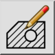

Rediger luke
Verktøylinje/ikon:


Meny: Endre > Rediger luke
Snarvei: M, H
Kommandoer: edithatch | modifyhatch | mh
Dette er en automatisk oversettelse.
Verktøylinje/ikon:


Dette verktøyet kan brukes til å redigere eksisterende skravurobjekter.
Merk at du i stedet for dette verktøyet også kan dobbeltklikke på skravur- objektet du vil redigere.